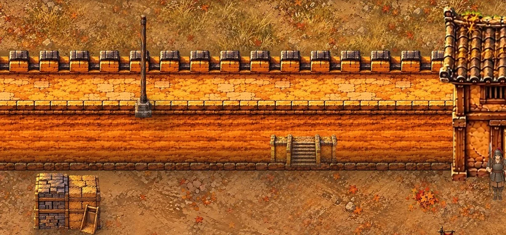

院牆一圈：一般人家、有錢人家和公家各挑一張
現在遊戲裡用的是第一張，另外六張是剛產的，每張下面寫了適不適合五原。我的建議：有錢人家和公家的院子用夯土瓦頂，一般人家用素夯土，走在城裡看得出貧富。兩邊可以挑同一張。綠底我先換成土色方便看。挑好以後，我把挑中的綠底原圖和自動去背的版本放進 art/wuyuan/manual/ 給你修。
已經照這個建議做進遊戲了（下圖：A2 上面兩戶素夯土、下面東邊大戶夯土瓦頂）。不用你去背：產圖用純綠底，自動去背的邊緣量過沒有殘留綠邊；也照營柵的做法改用原圖的解析度拼（一格 80 像素），市牆一樣。
想說的
資料庫裡的選擇
一般人家用「素夯土」，有錢人家和公家用「夯土瓦頂」。這一筆是我在對話裡回「好啊，看得出來窮和富」以後，AI 替我記進頁面資料庫的。
我在對話裡說的
- 12:01「院牆一圈可以不可以多繪幾種？我來找個合適製作的，目前這個感覺不合適」：AI 多產六種院牆，做了這一頁（5fd026cc）。
- 12:20「好啊，看得出來窮和富」：院牆分兩種做進遊戲，一般人家素夯土，有錢人家和公家夯土瓦頂（f3c7c430）。
- 13:54「院牆和市牆，還有沒有需要我去背？還是你可以參考軍營圍籬一樣的做法了，你已經學會了？？」：改用原圖的解析度拼（一格 80 像素），自動去背量過沒有殘留綠邊，不用我去背（d101d4bf）。
營柵：照你的圓錐、角圓柱拼
C1、C2 的軍營。橫的一根接一根，間距照你排的那一排（每根約半格）；直的往下疊；四個角和營門兩邊放角圓柱，長的一段中間大約每 8 格也穿插一根（你說不一定從頭到尾都尖的）。圓錐和角圓柱換成照你那根產的高解析度版本（各三根），繩子下緣對在同一條線上，同一組粗細一樣，上端高低不一；營門挪到正對營帳中間的走道。
上面整座軍營縮小了（一格 20 像素）。下面這張是營門一帶在遊戲裡的大小（一格約 60 像素）。
想說的
資料庫裡的選擇
這一節沒有存到選擇，都是在對話裡一句一句改的。
我在對話裡說的
- 12:01我自己做了積木：一根圓錐、一排橫牆的圓錐、一根角圓柱，跟 AI 說「我製作了單一圓錐，你可以用來疊圖疊成直的或橫的都可以，然後 90 度角邊用角圓柱來當邊邊，營門應該也是可以這樣組合起來」：營柵改照這些拼，橫的一根接一根，直的往下疊，轉角和營門兩邊放角圓柱（5fd026cc）。
- 12:07「你的軍營不一定要從頭到尾都尖的，也可以中間幾個串圓柱之類的，對嗎？」：長的一段中間大約每 8 格穿插一根角圓柱（0fce0a46）。
- 12:24「營門的圓角柱和圓柱都太矮了嗎？感覺好像有需要 2 倍高」：圓錐、角圓柱拉成兩倍高，只拉下半截木頭，尖頂和繩子不變。「另外，營門好像可以右邊一點，離左邊牆有一點距離」：營門挪到正對營帳中間的走道（62c1296d）。
- 12:30「你的角錐是只有 1 種嗎？」：圓錐一根一根做出左右翻、高矮、深淺的差別（23e4ce70）。
- 12:32「排起來有點太亂」：高度改回一樣，頂端排成一直線（ad0996c8）。
- 12:44「高度不一定吧，是綁繩位置一定要一樣吧」「圓柱也是啊，繩子位置要在一樣，如果解析度不夠，就去重生 3 張高解析圓柱」：照我那根產高解析度的圓錐、角圓柱各三根，繩子下緣對齊，一格 80 像素拼（d544cac0）。
- 13:35「為什麼看起來不整齊了？」：粗細改回我那根，尖頂到繩子那段每根一樣長，木頭深淺拉到一樣（d26f3d6b）。
- 13:42「每個圓錐柱中有一個看起來像是樹枝分支的圓洞嗎？那是幹嘛，為什麼要畫那個？」：圓錐、角圓柱重產，不要木節（54511ac2）。
- 13:52「營圍牆的角錐好像寬度太寬所以互相疊到了？」：圓錐一根挨一根，不再疊（269a8ef4）。
射箭場、馬廄
你問校場是不是只操練、要不要馬場，加了這兩樣，各看一下。
想說的
資料庫裡的選擇
這一節沒有存到選擇。
我在對話裡說的
- 12:44「校場真的只是用來校練而已？沒有其他設施像是射箭？」「或者還有什麼馬場？」：C2 校場南半邊加射箭場，C1 軍營加馬廄、馬槽和拴著的馬（d544cac0）。
- 13:52「三個箭靶好像都一樣？？」「兵看起來是拿槍和戟不是拿弓練射？」：三個箭靶各不相同，射手換成背對鏡頭拉弓的圖。「馬廄（C1 營門走道東邊）的馬好像都同一隻？？？」：換成舊道具圖的棗紅、灰斑、栗色三匹（269a8ef4）。
上城頭的路（立約）
你選了沿著牆的馬道，已經做進遊戲：A2 北牆內面從第 10 欄（西）斜斜爬到第 19 欄（東）的城頭，原本那段小台階拿掉。順便修了城頭能走的列：原本第 5–7 列，人會站到內側矮牆和牆面上，改成第 4–5 列，跟圖上的走道對齊；旗杆移到走道上，立約、箭壺的位置跟著往上挪。下圖放了幾個兵示意：立約的位置（旗杆左邊）、馬道底、中間、頂、城頭靠垛口那一列。
想說的
資料庫裡的選擇
這一節沒有存到選擇；馬道是我在對話裡選的。
改成馬道之前，這一節放的是下面這張：A2 北門西邊第 16–19 欄兩階小台階，貼在牆面上。當時兩個選項是「維持現在的台階」和「改成沿著牆的馬道」。

我在對話裡說的
- 13:52「另外我們可能有需要，幫北牆邊製作一個梯或斜坡嗎？不然續和布要怎麼上去立約？」：確認頁加上這一節，列出「維持現在的台階」和「改成沿著牆的馬道」兩個選項（269a8ef4）。
- 14:01「改成沿著牆的馬道，你現在畫的我看起來合成有問題」：A2 北牆內面加沿著牆的馬道，拿掉小台階。「桿也是，位不正確」：旗杆移到城頭走道上，立約、箭壺的位置跟著挪（0fee2b0f）。
營門：兩種擇一
A 是你要的大一點的營門（兩根粗門柱、一道橫木、一面布），現在遊戲裡用這張。B 是只用柵欄的角圓柱、不加門樓。
想說的
資料庫裡的選擇
這一節沒有存到選擇。
我在對話裡說的
- 12:20「可以帶上圓角柱和角錐，跟用之前產的營門圖，再重生一個大一點的營門圖嗎？」：營門照我的角圓柱、圓錐和舊營門重產成大一點的，門柱壓在柵欄門口的角圓柱上（f3c7c430）。
市門
B3 的市有兩個門，各選各的。
想說的
我按的
我在對話裡說的
- 12:20「我看起來好像可以耶？？」「市場西門去背，然後排進去，可以看到人走過呢」：西門照北門的樣子產側面的，用第一張（f3c7c430）。
- 12:24「西門可以縮小一點點嗎？」：西門 3 格寬改成 2.6 格（62c1296d）。